Project 1
How To Build A Computer
Table of Contents
Part 1: Materials
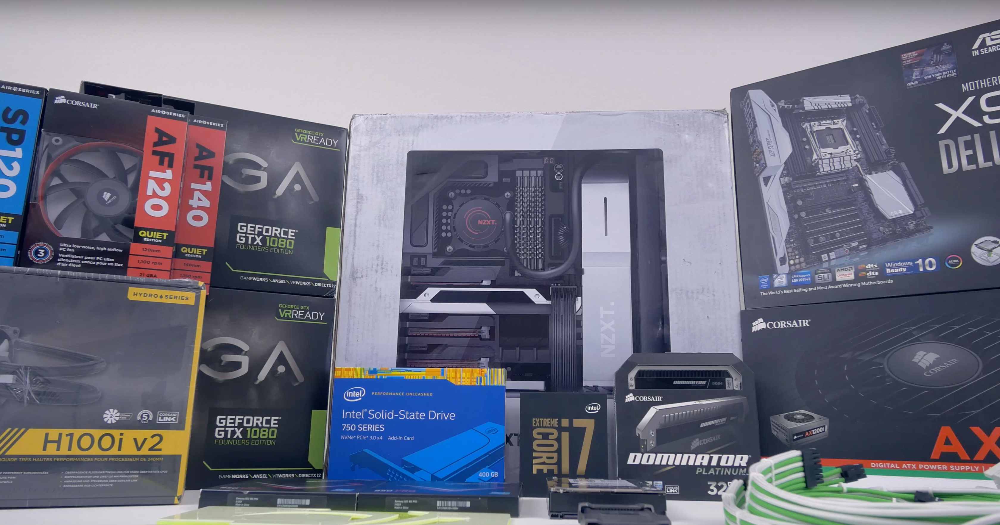To build a computer you will first need to get these essential parts:
- Computer case - what all the parts are going to be stored in. Case sizes vary based on the size of your motherboard.
- Motherboard - the circuit board containing principle components of a computer and connections to other circuit boards.
- Central Processing Unit (CPU) - the brains of the computer. It makes all the decisions and is used to run all your programs.
- Random Access Memory sticks (RAM) - stores information for your CPU. The more RAM you have the faster your computer will run.
- Graphics Processing Unit (GPU) - used to render all 3D graphics.
- Power Supply Unit (PSU) - used to give power to your computer.
- Storage (SSDs or Hard Drives) - used for saving files and software to your computer. SSDs are typically faster but cost more than regular hard drives.
- A Phillips Head Screwdriver- this is the only tool you need to build a computer. Used to open the case, install PSU, motherboard, HDDs, etc. A magnetic tipped variant is always useful. Optional tools
- Cable ties- cable management is very important for an efficient and good looking build, and to have a good looking build you need some sort of cable tie to keep them under control. A good option is velcro ties as you can adjust them as needed, but zip and twist ties will also work well. Many cases and power supplies also include these in the box.
- Wire cutters/scissors- used to cut zip ties down
One thing to keep in mind is not to skimp on the PSU, it might be tempting, but you want good power going into your parts, so don't cheap out on this. Also use a tool like this PSU calculator to see what size power supply you will need. Plan large though, add a couple 100 watts as you may want to upgrade your parts later. Also, if you have a large card that uses multiple power connectors, check to see that your PSU has them.
Another thing to keep track of is your drives, and how many SATA cables you will need. Most motherboards only come with two to three, so you may need to buy extra.
Part 2: Precautions
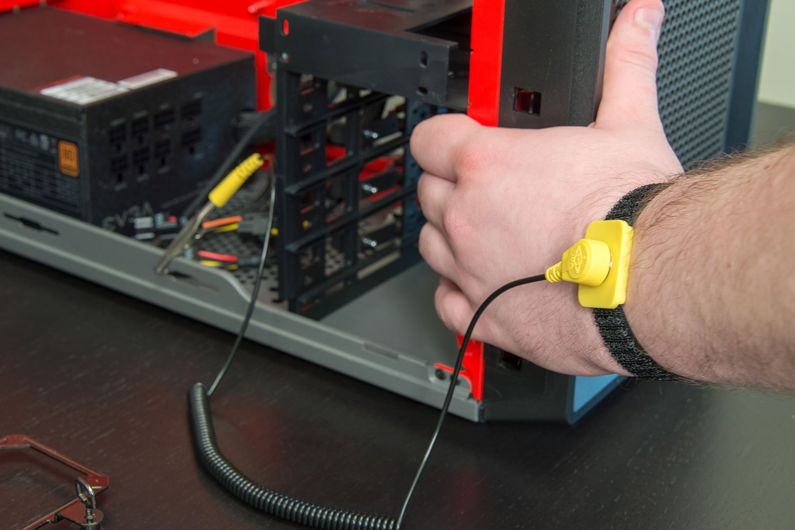Before we jump into building your computer, there are a few precautions to know about. One of the most common problems that occur when building a computer is static electricity, which ruins electronic parts. Luckily, there are multiple simple solutions to this, such as an anti-static wristband. This wristband should be worn on your non-dominant hand and connected to the computer case. If you do not own one of these you can simply ground yourself to the base of your case or power supply by touching it every few minutes (this only works if the PSU is plugged in, which is why it is not preferable, just make sure not to flip the switch to on). Many parts will come in an anti-static bag, these can come in handy so you should never throw them away. Its smart to keep parts in their bags until your ready to use them to prevent them from getting ruined. A good rule for building computers is to avoid carpets at all costs, since it produces a large amount of static electricity.
You should also be careful with cords. Never plug any parts into your power supply until your are completed building your computer and if you aren't using the power supply to ground yourself then you can also leave that unplugged. It's also smart to wait to plug in your keyboards and mouse until after your finished building. When handling parts with printed circuit boards (PCB) such as your RAM, graphics card, and motherboard you never want to touch the pins. Instead you should only touch the PCB edges as these wont be ruined by fingerprints and a bit of force.
Part 3: Preparing the case and power supply
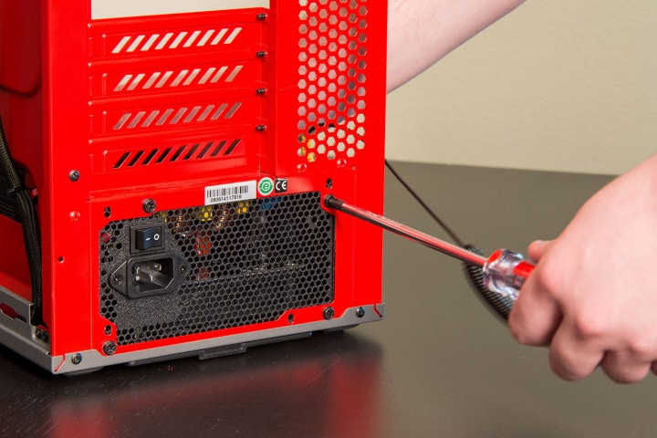Now that you have your materials and a safe spot to work, you can finally start assembling the PC. Keep in mind that you will need all the screws and cables included with your parts, so be careful where you are putting them and stay organized. It may be wise at this point to find some sort of container for your screws so they don't get lost (there are some great screw mats, or magnetic trays for this, otherwise just a tackle box can work).
First, get your case and power supply out. Most cases have a panel on the left side which can be removed with either a screwdriver or your hands. Take this panel off and place it to the side until you are finished building the rest of the computer. Put it somewhere safe so that it does not get scratched. Second, find where the power supply goes in your specific case. It will most likely be at the top or bottom left corner. if not, its very easy to find by looking for a square opening where your PSU will fit.
Once you find where the power supply goes, you will need to choose whether the PSU will be pulling air in from the case, and exhausting it out the back, or pulling air in from the back of the case, and then bringing it into the case. If you want the PSU to exhaust air, you will need to place the fan facing up. If you want to intake air, place the fan down.
Now, screw the unit into the square opening with the included screws. Some cases have a removable tray where you can screw the PSU into, and then put that into the case. Otherwise, you can just use the four screws on the back of the case. Depending on which type of PSU you have (standard or modular) the cables will either be connected or separate and detachable. If you have a modular PSU you can detach these cables and then plug them in at the end once your computer is build. If not then its recommended to keep these cables bundled up and away from any other parts of the computer until you are ready to plug everything in.
Part 4: Installing the CPU, Cooler, and RAM
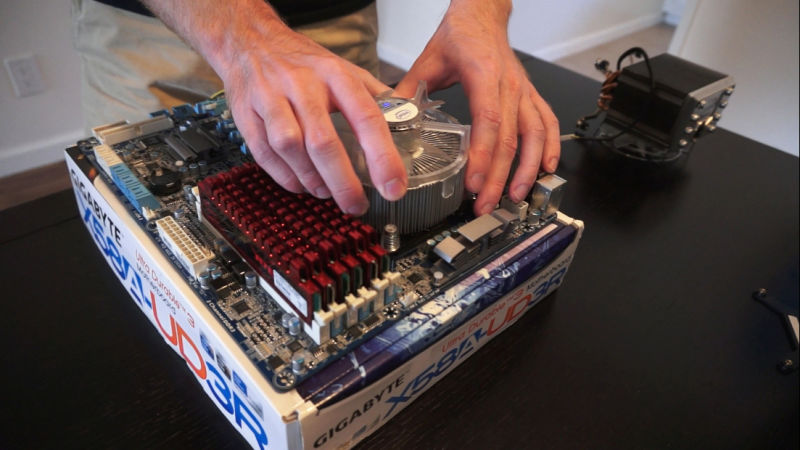Before you build anything in the case, you should build the essential parts outside of the case first. This allows you to test these parts, and make sure nothing is damaged and dead on arrival. These include the CPU, Cooler, RAM, and if you have it, a GPU. You should remove your motherboard (MOBO) from the wrapper and use its box as a "workbench".
The steps below will be on how to install your CPU (aswell as the differences in installation between Intel and AMD chips). These steps can be done either outside or inside of your computer but we recommend outside. Once you finish reading the last section there will also be a guide to help you test out the parts.
First up is the CPU. Depending on if you have an intel or and chip these step can be slightly different. Both have similar steps but we will go over some differences when installing them below.
Installing a Intel CPU
Installing an intel CPU is more simple then a AMD install but this doesn't mean you shouldn't be careful. Installing a CPU is one of the more difficult steps when building a computer since it requires you to be very careful. You are going to start by opening the load plate.
To do this you will push down gently on the load arm and move it out sideways from under the hook, and then lift it up all the way. The lever action of the hook will open the plate, which you can easily flip up. If it’s a new motherboard, there may be a plastic or foam filler in the socket, which you can gently remove, or simply leave in depending on what it says on it.
Your CPU itself should have two small notches cut out of it, directly across from each other on the chip. With the contacts facing down, there should be only one direction where the notches will line up with the notches in the socket. Intel CPUs will also have an arrow in one corner of both the socket, and the chip that you can use, or just the text itself, to align it properly. You will want to gently set this in the socket so it lines up perfectly. You don't need to put any pressure when placing in it as it will automatically set in and lock in once you put the load arm back in place. To do this you will need to take the load arm and push it down over the CPU and lock it back into the hook till you hear a click, this will take a good amount of pressure to do so you will want to make sure the CPU is placed in perfectly before attempting this. Don't be worried if you hear some worrying noises, that is normal. Keep the cover that popped off in a safe location as you might need it if you want to return your motherboard.
Installing an AMD CPU
Installing an AMD CPU is fairly similar to an intel chip with the major difference being that the pins are actually on the CPU and have to be installed into the socket with a bit more pressure to fit. You are going to do some of the same steps as you would on an Intel chip such as opening the socket and removing the plastic or foam filler. After this you are going to want to look for a golden triangle on the CPU. This triangle lines up with the triangle in the socket and you are going to place it pin down where the 2 triangles would connect. Now again you are going to want to put the load arm back on to tighten and secure the CPU. It takes more pressure to accomplish this with an AMD chip so be sure to continue pushing until you hear a click.
Cooling your CPU
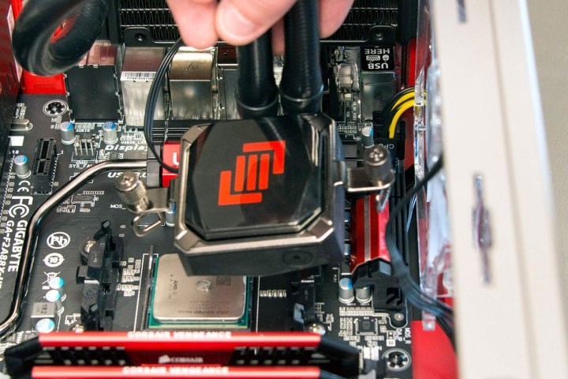Alright, now you can start the installation of your cooler. Luckily this is a fairly easy task to do. If you are using the cooler that came with your cpu its hardly any work at all, your going to gently place it on top of your cpu and screw it in to place so that the logo is facing properly when the case is standing up.
To screw an Intel cooler in, place the pins through the holes around the CPU socket, and then turn the top of the pins in the opposite direction shown by the arrows. Check it is locked in place by giving it a little twist. After it is mounted, route the cable such that it does not interfere with the fan, and plug it in to the CPU_FAN header of the motherboard.
STOP, before installing the cooler install your RAM as some after market coolers may be too large and not let you get to the RAM slots after installed. If you are using an aftermarket cooler you will be required to put on thermal paste, no worries though this is a fairly simple task as well, all you have to do is get a small drop and place it in the center of your cooler so that it will connect to the CPU (be sure to remove plastic off the heatsink first).
Once its connected to the CPU the thermal paste will eventually spread out till there a small layer all across the cooler. The reason for this thermal paste is that it allows for heat to flow trough from your CPU into the cooler. Make sure to screw it in and then after this is all done you are going to want to take to cooler cable and plug it into the motherboard in the slot labeled "CPU-fan".
These are just the basics, you will have to look at the instructions included for full details specific to your cooler.
locking in the RAM
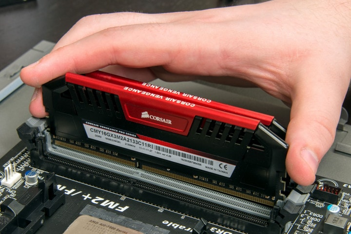Now to probably the easiest step of the whole build, putting in the RAM. All this requires is for you to know which direction and slot to put the RAM in. For direction all you need to do is find a hole in the contacts of your RAM and then face that towards the bottom of the motherboard to make sure it matches up with a block in the RAM holder that will fit into the hole.
Figuring out the right slots to put your RAM in can be more difficult as it depends on how many sticks of RAM you have as well as the brand and type of RAM. If you only have 1 stick of ram then its easy, all you do is put it in the A1 slot. If you have 2 sticks that are identical to each other you will want to place it in the slots that are matching in color which will be A1 and B1. The reason for this is that your system will then make these sticks of RAM act like a single stick. If you have 2 different sticks of RAM you will want to place them in A1 and A2 since your system will not be able to read 1 of them if it is placed in B1. just always be sure to read your manual and see where the manufacturer. wants you to put the sticks as it may be different for you.
After you have figured out the direction and slot that works for your stick or sticks of RAM all you have to do is push them in until you hear a click. and the "wings" at the end lock in. There are little flaps near the end of the ram stick called wings that should lock into place if you have pushed in the ram correctly.
After this is done your RAM should be good to work as soon as you connect your motherboard so lets do that next.
Part 5: Putting your motherboard in the case
Installing your motherboard is a pretty simple task but it can be hard to explain as it changes depending on your case and motherboard. Generally you case will have a built in "Stand-Off", this is a gap between the back of your case and where you will place your motherboard used to give some cooling, created by raised screws. If this isn't already installed, the screws will come in the case box and you will need to put them in yourself. You need to know what size motherboard you have (most likely ATX, possibly Micro-ATX), and follow the guide included as to where you need to put the screws. Put all the standoffs in, and then find the screws to actually screw the motherboard into those standoffs.
DO NOT FORGET THE STANDOFFS. Some cases may come with them installed, but otherwise you need to do this. Simply putting your motherboard against the back panel will cause a short and destroy it.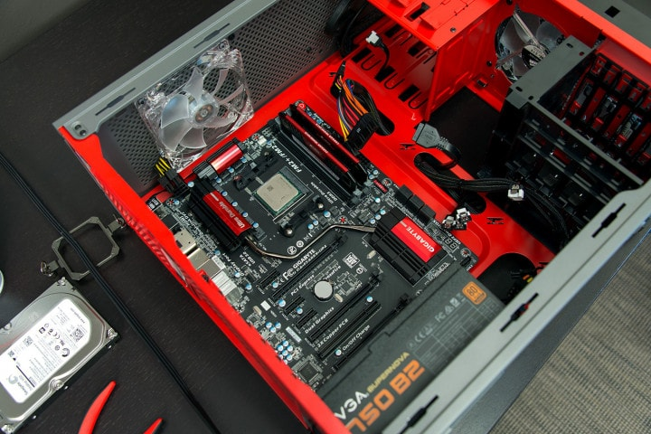 Next up you have to figure out what way to put in your motherboard. Depending on your case it will be either at the back, front, or top of the case. You can figure out this position by looking for a rectangular cut out in your case. This cut out if for a Shield called the "I/O Shield", this will come packaged with your motherboard. You will want to insert this in before moving on. This can be done by simply placing it the correct orientation, and applying firm pressure to all corners of the shield.
Now you should be good to install your motherboard. Your going to want to line it up so the screw holes match up the stand-off and the ports match to the I/O shield. you may have to wiggle it a bit but you will know its the correct position if the motherboard snaps into place. Now you just have to screw the motherboard into the stand-off to secure it into place using the screws supplied by your case.
Once this is complete you are going to plug in some cables including the power cable which will power the motherboard and the CPU. This cable will most likely already be in your motherboard and you will just have to plug it into the power supply.
Some other things you may have to plug into the motherboard are the cables for power and rest buttons, LED's, and USB ports. Installing these cables is also very simple, just find the matching labels on the cable and plug them into the motherboard.
To find out how to plug these in more accurately you can look at the manual that came with your motherboard as it will be more accurate for your specific motherboard. Typically, all the front panel headers will be arranged in the bottom right (hard drive LED, power LED, power/reset switches), the front panel audio and USB will be in the bottom middle, the CPU power will be in the top left, and fan headers will be sprinkled throughout.
Part 6: Installing the GPU
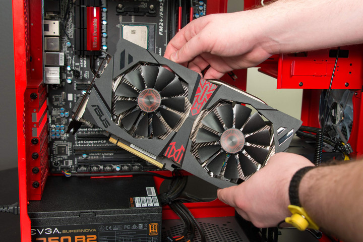Whether your CPU doesn't come with integrated graphics or you just want to get an improved GPU to play games the first step is choosing a graphics card from the thousands of options available. The hardest part of installing a GPU can actually be just picking one out. With thousands of different sizes, capabilities, looks, and obviously price points it can be tough to find the perfect one for you. There are 2 different companies that manufacture GPU's, Nvidia and AMD.
On top of this multiple other companies make their own version of these 2 companies GPU's so which is the right choice for you? Well this can come down to what your personal preference and your price point so always research before deciding which is right for you. For this tutorial we are going to assume you have already picked out a GPU that works for you.
Most graphics cards will simply fit into a PCle slot on your motherboard, these can most commonly be found resting under your CPU. They are long and slim connectors, and depending on your case there are usually 2,4, or 6 of them in a row.
To the left of the PCle slots will be the back of your case where there will be a row of thin metal brackets that can be removed with a screwdriver. Depending on the size of these you will have to remove one or two for each graphics card you have. You can figure this out by simply looking at how big your GPU is compared to these metal slots and removing them until the side panel of your GPU fits in-between them. This tutorial will go over how to install 1 GPU, but if you have more than 1 you can learn how to install the second one in our second project; upgrading your PC.
Keep in mind that not all PCI Express slots are the same. While many motherboards have several PCIe x16 slots, some of those may offer only PCIe x8 capabilities. Always install your graphics card in the slot closest to the processor to ensure the best performance, and consult your motherboard’s manual to figure out the best use of other PCI-E slots if you’re installing multiple video cards.
Now that you have removed the brackets, you can place the graphics card into the PCle slot. This is a fairly simple task similar to installing RAM sticks. First you are going to want to make sure the switch by the PCle slot is pushed outward. Then, with the ports facing the empty spot where the backplate used to be, carefully line up the long series of contacts on the card with the appropriate slot on the motherboard. Now all you have to do is give it a slight push until it snaps into place. Along with a snap the switch should also move back to hold the card in place. If the card doesn't lock into place with little force make sure the pins are placed properly before attempting to push it into place again. Finally use the screws from your brackets to screw the back of your GPU into the same spot in the case.
Most video cards need extra power apart from what the PCIe slot can provide. Those cards that do will have a PCIe power connector on the side of the card facing away from the motherboard or, in some cases, on the side facing the front of the case. The connector is a group of square plastic pins numbering six, or eight. The most powerful cards may in fact have two such connectors. Find the appropriate connector on your power supply and slot it in. The connector is designed to prevent improper installation, so if the connection isn’t easy, double-check your alignment to make sure it’s correct.
Additional expansion cards
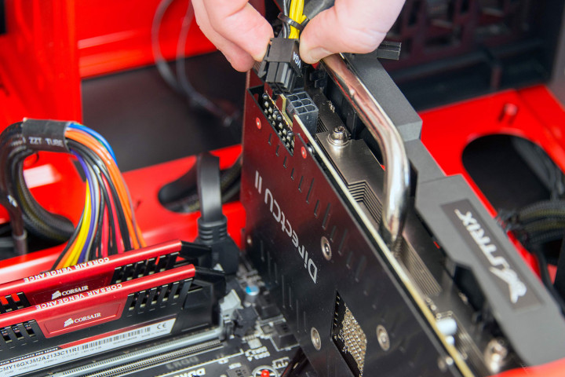 Graphics cards aren’t the only component that uses the PCIe slot, and the list includes wireless networking cards, sound cards, and even hard drives. These can be installed very similarly to graphics card with one slight difference being the size of these cards. Many cards may be smaller then a regular sized GPU and will fit into other slots. There are three types of PCIe, and they are named based off of the number of lanes they use on the CPU. There is 16x, 8x, and 4x. Depending on your MOBO, these may be actually physically smaller sections of the full PCIe slots, or full sized, and just a different color. You can figure out if any expansion card goes into this slot by looking at the connectors on the card to see if it would fit the whole slot or only a small section. If you aren't sure you can always check the cards manual to make sure you are putting it into the right slot. Other kinds of slots include the PCIe 1x slot (typically for sound cards, and networking cards as there is not much bandwidth), and legacy PCI slots (usually for older devices, though some sound cards still use this).
This brings up a good point. A large consideration when choosing a CPU is the number of PCI express lanes it supports. Many core i3 CPUs have a max of 10-12, and then core i5 and i7s can be 16 up to even 40 lanes. This is important, because lets say you want to run two GPUs in SLI, that both can run at 16x, but your CPU only supports 16 lanes. What will happen will both lanes will be held down to 8x (aka bottlenecking), or lower if you have a sound card, or networking card as well. This effect is not always large, usually only a couple FPS, but with a very low end CPU can lead to a big drop in performance. This is something you should always take into consideration when buying GPU's and expansion cards. Just remember that any device on a PCIe lane, even M.2 SSDs will use up this shared bandwidth. You should also look at your motherboard to see how many PCIe slots it has. Some motherboards have 4 PCIe lanes, but only one of them is 16x.
Part 7: Installing hard drives
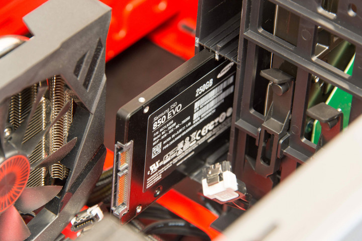When choosing hard drives you usually have a choice between 3 different sizes; the classic 3.5 inch spinning disk data drives, the smaller and newer 2.5 inch SSD drives, and the even smaller 1x3 inch M.2 drive chips. Depending on which you choose the mounting and connecting of these is very different.
3.5 inch Hard Drives
We will start with the classic 3.5 inch hard drive. Since this is an older hard drive you are basically guaranteed a slot for this type of drive in your case. Most cases will have a hard drive cage located near the top and front of your case. This is a fairly easy drive to install as you will just have to align the hard drive in the cage and then screw it into place. Before screwing the hard drive into place you will want to make sure that the power and data connectors face towards the motherboard. Once the hard drive is in place just screw it into place and you are done. There are 2 cables needed to connect these, one for power and the other for data. Both cables have an L shape to them so make sure to read which cable goes into each slot before plugging them in.
2.5 in Solid State Drives
The newer and faster 2.5 inch SSD's can be installed in 2 different ways. Depending on your case you may have a slot similar to a 2.5 inch hard drive slot but smaller to fit the 2.5 inch SSD's. With this the installation is very simple you just have slide it in and it should lock into place. If you don't have a case with a slot for an SSD then you will have to get an adapter for the 2.5 inch SSD to fit into a 3.5 inch hard drive slot. once you get one of these the installation will be the same as having a regular 3.5 inch hard drive. Similar to above you will also have 2 cables, one for power and one for data.
M.2 Drives
M.2 drives are very new in the computer world so many motherboards may not have a slot for these yet. If you plan to get this type of drive then you will have to make sure your motherboard is compatible with it. These drives are very different from the standard 3.5 and 2.5 inch hard drives. These small 1x3 chips also have a way simpler installation. You will want to find the M.2 slot on your motherboard and then remove the screw near it before sliding the chip in. After this just install the screw and you are finished, no cables needed.
Optical Drives
Do you need an optical drive?

An optical drive can be useful for some people, but in general they are being used less and less then they were before. With new ways to watch movies and install games an optical drive just isn't very important to the regular consumer. But if you need or want an optical drive for any reason then it is fairly easy to install on cases that will allow for them. Some newer cases may not have a slot for the optical drive so make sure to check for this before buying a case.
Installing an optical drive
Optical drives are almost always installed in the front of your case near the top. The drive should slide easily into a slot that is 5.25 inches wide. For some cases you may have to remove a front plate before installing the drive so make sure to check for that with your specific case. These are fairly easily to remove only involving a few screws most times. Once you have removed the front plate you just slide your optical drive in and then screw it into place. The cables for this are similar to hard drives but it shouldn't be hard to figure out where they go in the PSU because of their unique size and shape.
Part 8: Final Steps
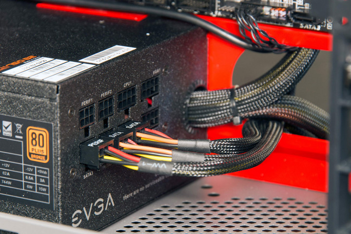Connections
Before you turn on your computer you want to make sure everything is plugged in. Some parts can be pretty simple to figure out such as GPU's and motherboards, if there are lights on the part and they are on then you know that is is plugged in. If there are no lights as there aren't for many parts you need to make sure the cables are plugged in properly. you should start by checking the parts connected to the motherboard as well as the motherboard itself.
Connections on your motherboard
The motherboard is easy to figure out if it is not plugged in. The cable for this is usually very wide and is easy to spot. The cable that connects to the motherboard will be near the PCle slots on your board most likely but if not it is easy to spot by just looking around the sides of your motherboard.
Your motherboard will most likely also have a second connector that will connect the CPU. This cable will be either a 4 or 8 pin connector. Looking trough your cables there will be a cable similar to this for your PCle slots so you will want to read the manual to make sure you grab the right cable. If you don't want to read the manual you could also just test out both cables since the PCle cable wont properly fit.
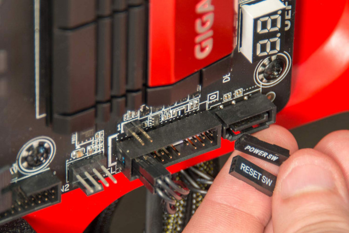
The CPU cooler also needs power from the motherboard. You can find the slot for this cable near your cooker. The wire for this will be very small usually just 3 or 4 sockets that connect to 3 or 4 pins on your motherboard. This is different from most other parts that connect directly to your PSU.
Hard Drives and Graphics Cards
Hard drive cables are hard to mess up, with their distinct L shaped connectors they are very easy to spot. These cables will be plugged into your hard drive from the PSU in the one way that they will fit. High end graphics cards require their own power but cheaper less powerful options don't always require their own power. These cables are usually connectors with 6 or 8 pins. These plugs are usually brightly colored making them easy to spot and will only fit into the graphics card in one direction making it impossible to mess up.
Booting up your new computer
Now that you are finally finished building you new computer you can finally turn it on! Many times when booting your computer for the first time it wont correctly work, if yours doesn't then you should recheck to make sure all your cables are plugged in and retry. Once it does boot you will need to install an operating system (usually windows). We have made a guide on how to do that in our upgrading your PC page if you need help installing windows. After you have installed windows you will want to install drivers for many of your parts which can be a tedious task. Depending on your parts you may or may not have to download drivers for them. Graphics card drivers are easy to find by going to Nvidia's or AMD's website depending on which graphics card you got. For most other parts a simple google search for the driver should help you find it.
Finally after a few hours (or maybe more than a few) you should be able to properly use your new computer. For the first few days you will want to make sure everything is running properly, making sure to check the fans and case for overheating as well as your computer for any errors that pop up. If everything is looking good after a few days then your computer should be good to go!